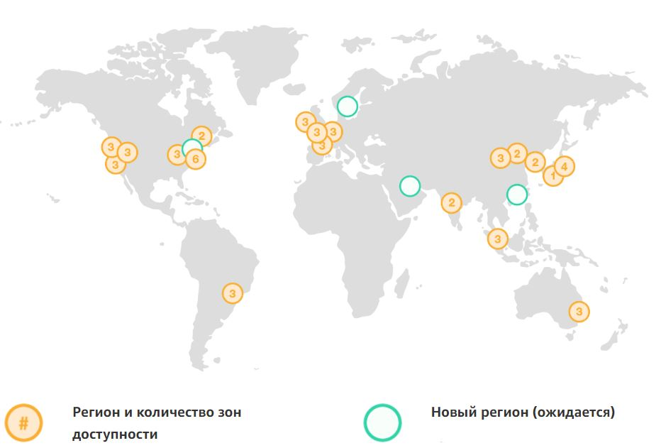

Amazon Web Services (AWS)
Сильные стороны
Продукты Amazon Web Services
| Облачные вычисления | Хранилище в облаке | Базы данных |
| Миграция | Сетевая конфигурация и доставка контента | Инструменты для разработчиков |
| Сервисы мультимедиа | Аналитика | Мобильные сервисы |
| Дополненная и виртуальная реальность | Интеграция приложений | Эффективность бизнеса |
| Интернет вещей | Разработка игр | Программное обеспечение |
География Amazon Web Services
Облако AWS включает в себя 55 зон доступности, расположенных в 18 географических регионах по всему миру и одном локальном регионе. В ближайшее время планируется создание еще 12 зон доступности и четырех регионов в Бахрейне, САР Гонконг, Швеции, а также второго региона AWS GovCloud в США.
Доля услуг в доходе AWS
Прибыль собственного облачного сервиса компании Amazon Web Services (AWS) увеличилась на 49%, до 5,4 миллиарда долларов, что составляет 11% от общей выручки компании Amazon.
В то время как AWS поддерживает рост выше 40 процентов, Microsoft и Google в настоящее время расширяются гораздо быстрее и поднимают долю. Клиентами AWS являются корпорации, стартапы и государственные организации.